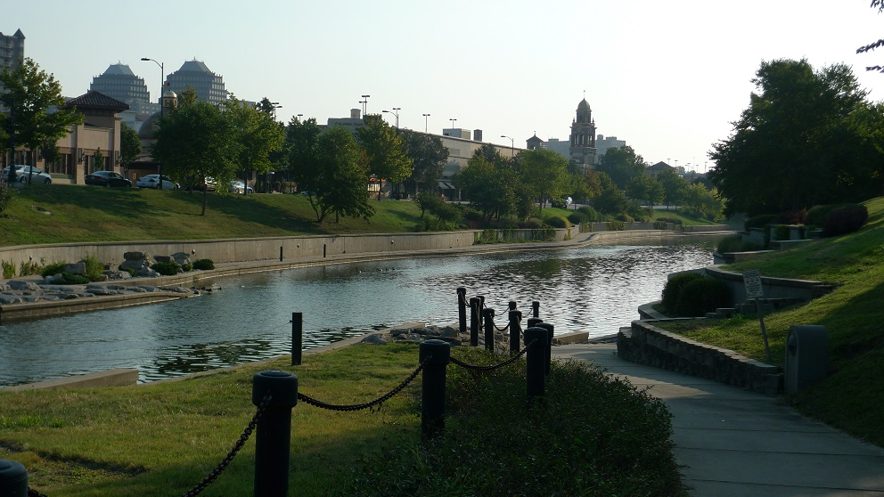
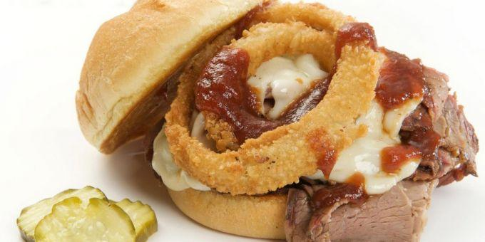
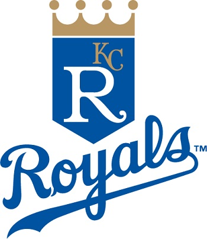
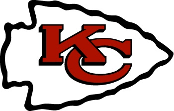
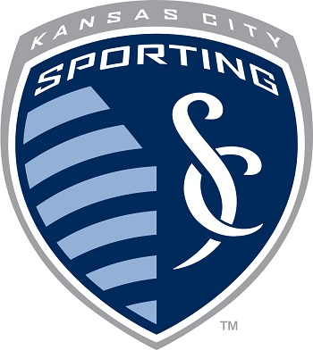
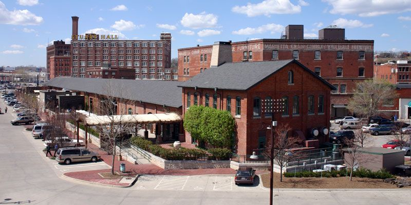
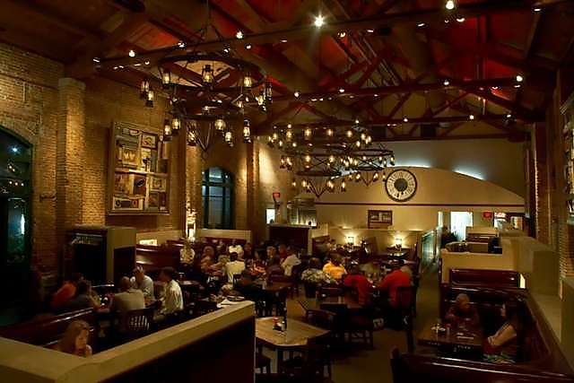

Never have I had a better breakfast. This eclectic diner featured on Diners Drive-Ins & Dives is appropriately located in the Crossroads District downtown.
Visit the Plaza and take a walk down the Brush Creek board walk. If you're here the right time of year, you'll catch a number of great local events: the plaza lighting, the dragon boats, and the plaza art fair. Follow the creek east to the lawn of the Nelson Art Gallery.
The Nelson Atkins Museum of Art is a world class museum featuring original works of Monet, Picasso, and Van Gogh to name a few.
Definitely Kansas City Joe's Barbeque - formerly Oklahoma Joe's. Get the Z-Man Sandwich.
Home of the...
  More Barbeque - this time Fiorella's Jack Stack in the freight house district.
 